User-Oriented Collaborative Design
I collaborated with a group of five people over the course of a semester to develop a proposal for a good or service that would make the lives of animal shelter employees better. We have reached the midway point of the project and are in the process of selecting just one proposal to continue developing for the remainder of the semester.
This assignment was completed as part of a User-Oriented Collaborative Design course. Students in Olin College's UOCD course spend the whole semester working on a single project for a particular user group, beginning with their own in-depth ethnographic study and concluding with a proposal for a good or service that will help people in their user group. We gain knowledge of the methodologies and processes used in human-centered design, such as the development of user personas and co-design processes, and we put those methods into effect by working on our own projects. During three design reviews evenly spaced throughout the semester, as well as a final design review for our final product at the end of the semester, we also get practice presenting our work and getting feedback.
I participated in note-taking and interviewing, helped to synthesize our results into physical and digital representations we could utilize to aid in our design process, and led interviews as well as co-designs with our user group. I also helped create frameworks to focus our ideas and produce broad and deep ideas.
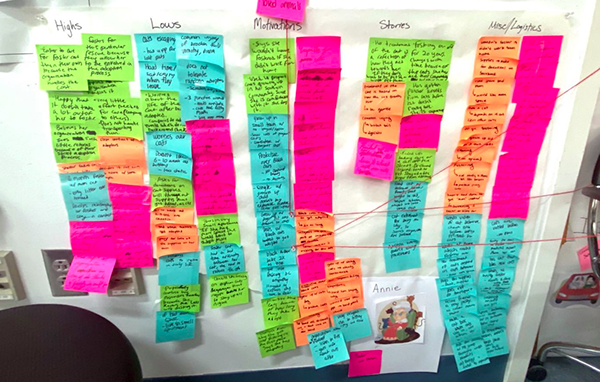
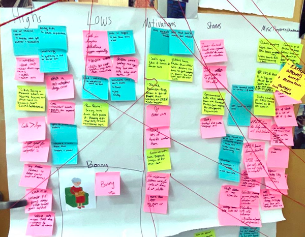
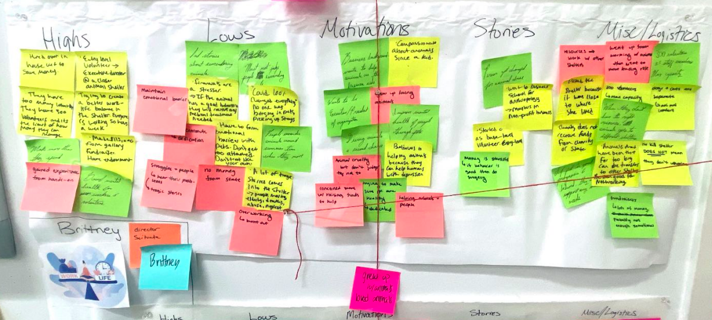
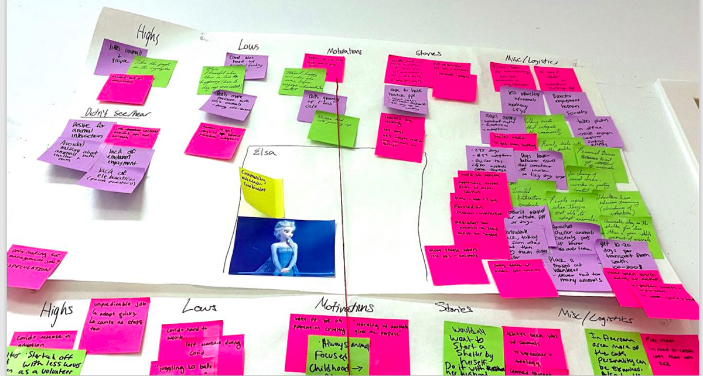
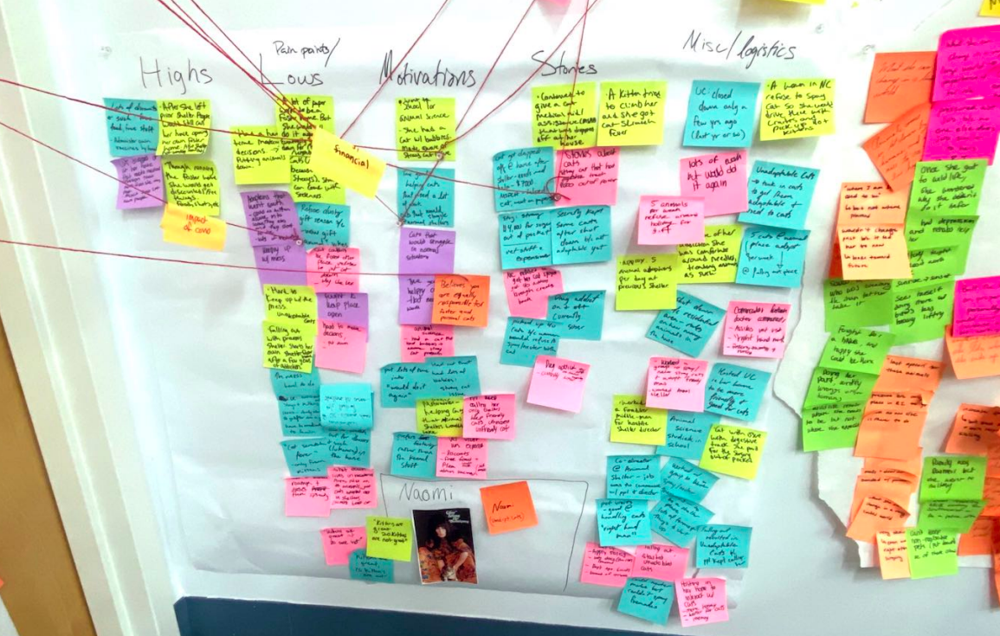
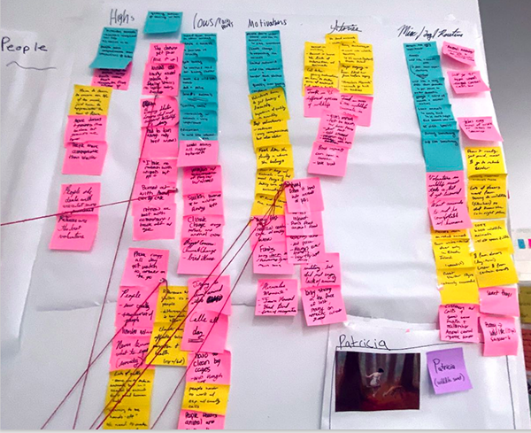
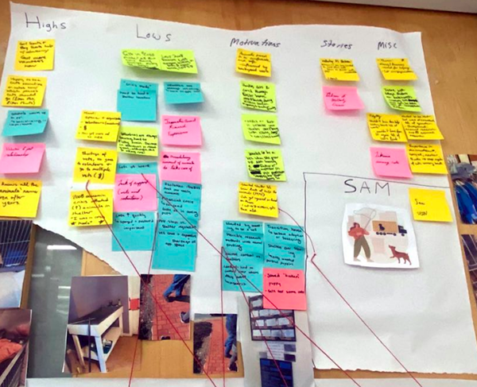
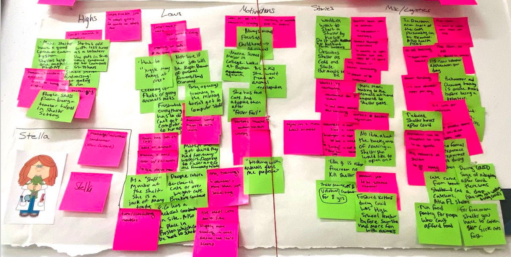
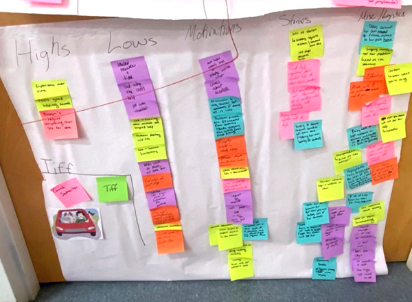
Above are the several personas made after conducting various virtual and in-person interviews.
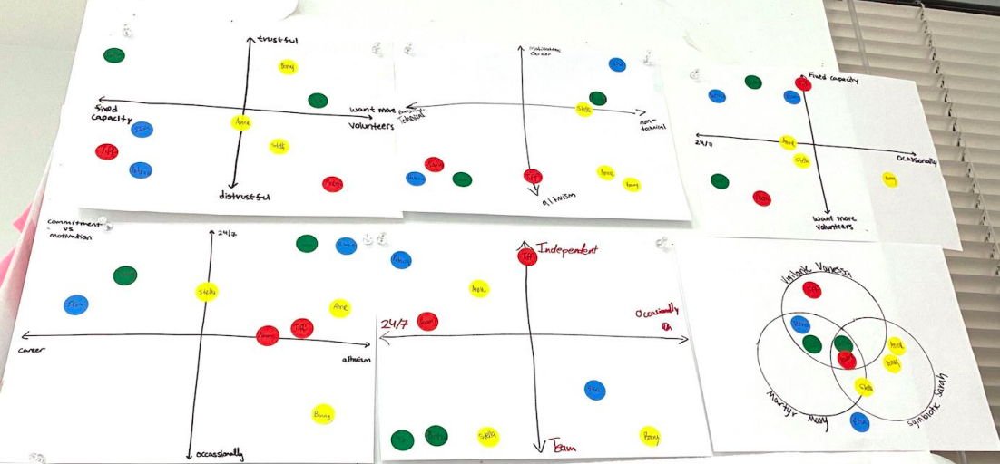
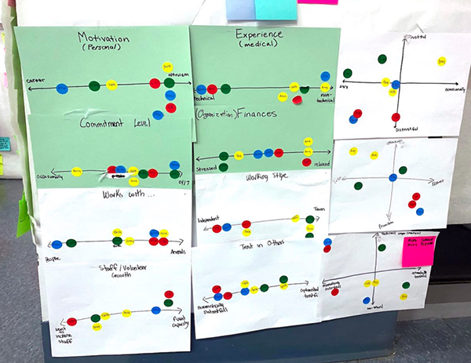
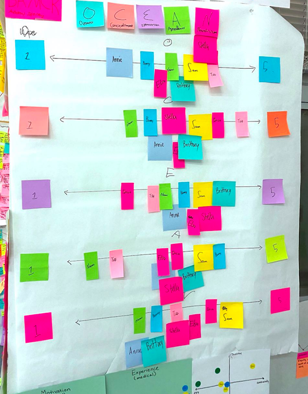
Here is a demonstration of affinity diagramming in addition to OCEAN diagramming, to help us find common traits throughout our personas to fuel our insights.
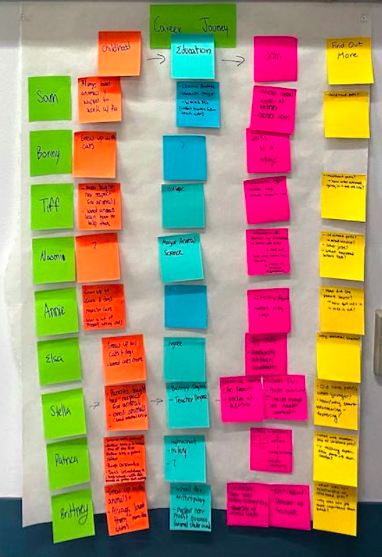
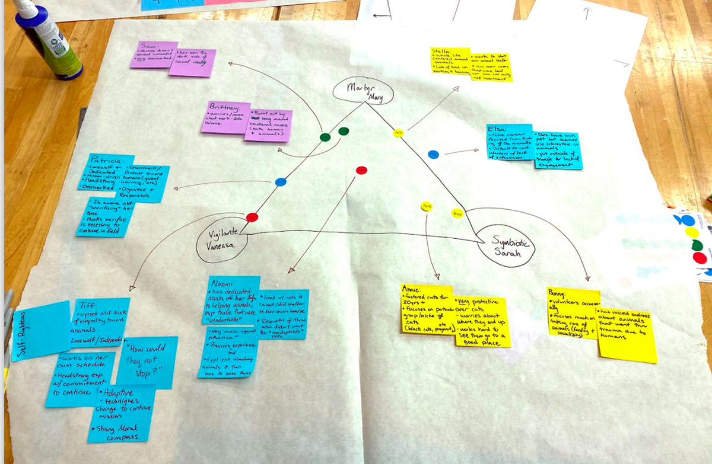
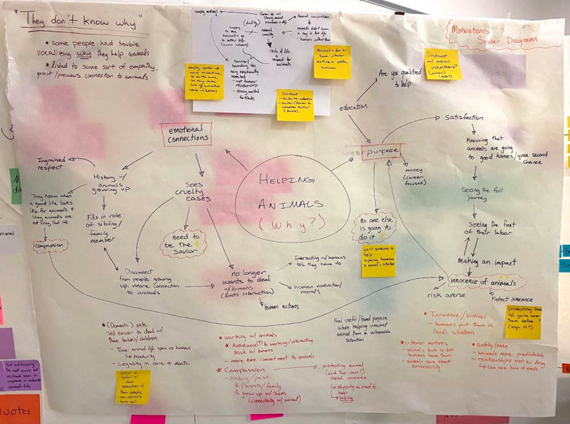
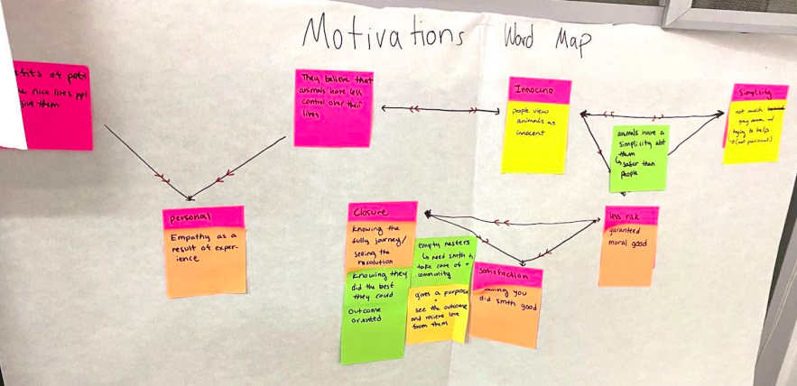
Shown are some of the resources created to support the process of obtaining our insights.